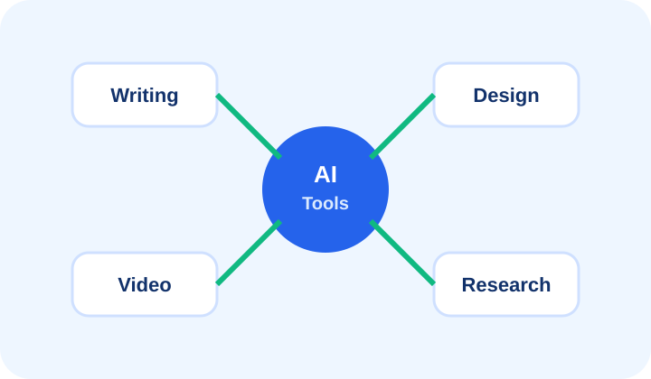

مشہور AI Tools اور ان کا استعمال
Writing، research، design، video، productivity اور business tools کی categories۔

Tools کو category کے حساب سے سمجھیں
AI tools کو names سے زیادہ categories کے حساب سے سمجھنا بہتر ہے، کیونکہ tools بدلتے رہتے ہیں۔ عام categories میں writing assistants، research tools، image generators، video tools، coding assistants، meeting note tools، automation tools اور business chatbots شامل ہیں۔
Writing اور communication tools
یہ tools emails، captions، reports، summaries، proposals، translations، FAQs، customer replies اور learning material بنانے میں مدد دیتے ہیں۔ عام public کے لیے یہ سب سے accessible AI category ہے۔
Design، image اور video tools
Image AI tools posters، concepts، product visuals، backgrounds اور creative references بنا سکتے ہیں۔ Video AI tools scripts، subtitles، voiceovers، clips، scene ideas اور editing support دے سکتے ہیں۔ Final quality کے لیے human designer یا editor کی نظر اب بھی اہم ہے۔
Research اور productivity tools
AI research tools long documents summarize کر سکتے ہیں، key points نکال سکتے ہیں، comparison tables بنا سکتے ہیں، meeting notes organize کر سکتے ہیں، tasks plan کر سکتے ہیں اور checklists generate کر سکتے ہیں۔
Tool choose کرنے کا طریقہ
Tool select کرتے وقت یہ دیکھیں: آپ کا goal کیا ہے، privacy policy کیا ہے، free/paid limits کیا ہیں، output quality کیسی ہے، Urdu/English support کیسی ہے، اور کیا tool آپ کے workflow میں fit بیٹھتا ہے۔
اہم نکات
- Tools بدلتے رہتے ہیں، categories سمجھنا زیادہ useful ہے۔
- Writing tools beginners کے لیے بہترین start ہیں۔
- Design/video tools creative support دیتے ہیں۔
- Privacy اور cost check کرنا ضروری ہے۔
Quick Quiz
جواب select کریں اور check button دبائیں۔